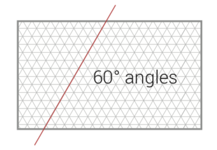
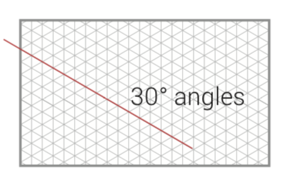

It is the policy of the Government of Nova Scotia that the interests of the province with respect to the government’s corporate brand in all communications applications, in all media, are best served by maintaining a singular, professional identity, and that Communications Nova Scotia is accountable for the same in the form of a Government Brand Policy.
A consistent and professional brand presence for the Government of Nova Scotia makes it easier for citizens to get the information they need, in a voice they understand and trust.
This policy applies to all government departments and offices.
Communications Nova Scotia manages and delivers communication services ensuring issues are thoroughly reviewed, communication goals are met, and the policies and priorities of government are clearly communicated to Nova Scotians.
The Nova Scotia government brand presents the spirit of the province and its government as a meeting place, or ignition point, that sparks innovation and prosperity. Branded communications present a strong image of a diverse and resilient people, poised to take on the challenges of the time we live in.
The basic characteristics of government’s brand voice are:
These characteristics should be evident in all forms of communication in all mediums.
The Nova Scotia logo is the focal point of the brand for the Government of Nova Scotia. It is used as the stamp of approval for all communication materials provided by the Government.
It is a registered trademark which is protected by the Trademarks Act of Canada, and can be used by government departments and offices.
It incorporates The Coat Of Arms and The Saint Andrew’s Cross* which appear on the flag of Nova Scotia. The colour scheme is also based on the flag and should not be adjusted or altered without written consent from Communications Nova Scotia.
* Saint Andrew’s Cross is a heraldic symbol in the form of a diagonal cross. This X shape is also called a saltire. The Scottish flag is a white saltire on a blue field, the reverse of Nova Scotia’s flag.
The most frequently used version of the provincial logo is the English only, full colour logo. There are a few situations where variations on this logo are required.
To meet the needs of our Mikmaw, Acadian, and Gaelic communities bilingual logos are applied to any bilingual communications produced to reach these audiences. The provincial government also recognizes the importance of supporting the LGBTQ community and has created a version of the provincial logo for this purpose.
When the province is communicating with audiences outside the province an international version of the logo helps to locate the province for audiences unfamilair with Nova Scotia.
Effective use of the logo depends on it being clear enough to be read. Size, distortion or inappropriate backgrounds can render the logo difficult to recognize. To avoid legibility issues these standards should be followed.
The grid is derived from the saltire found in our provincial flag (St. Andrew’s Cross). It represents the meeting point between land and sea, a foundational concept behind this brand. The grid can be rotated if required, however all the angles should follow one grid (30° angles) or the other (60° angles) in one single design.
 
The main colour palette reflects water and earth tones and should be used in most incidences. If required, a secondary colour can be introduced to enhance the design/message. Colour selection should always help to convey the message of the design and enhance photo selection.
Roboto is the dominant font family for this brand. It is an open-source typeface that canbe effectively applied to both digital and print media. Roboto is available in 12 different weights and Roboto Condensed is available in 6, making this choice very flexible in a wide range of communication products.
The brand also includes a secondary typeface for use in situations where Roboto is not appropriate. Occassionally unique font selections are required. In situations where a solid argument can be made and is approved by CNS, this brand is flexible enough to consider alternative font choices.
Because government messages should be presented in an approachable, friendly tone, as much as possible, upper case is used very sparingly, if at all.
CNS has an extensive selection of authentically Nova Scotian images that should be used instead of stock photography. Occasionally stock images can be justified but CNS images are preferred. For covers, one single “hero image” is recommended. Keep it simple and professional.